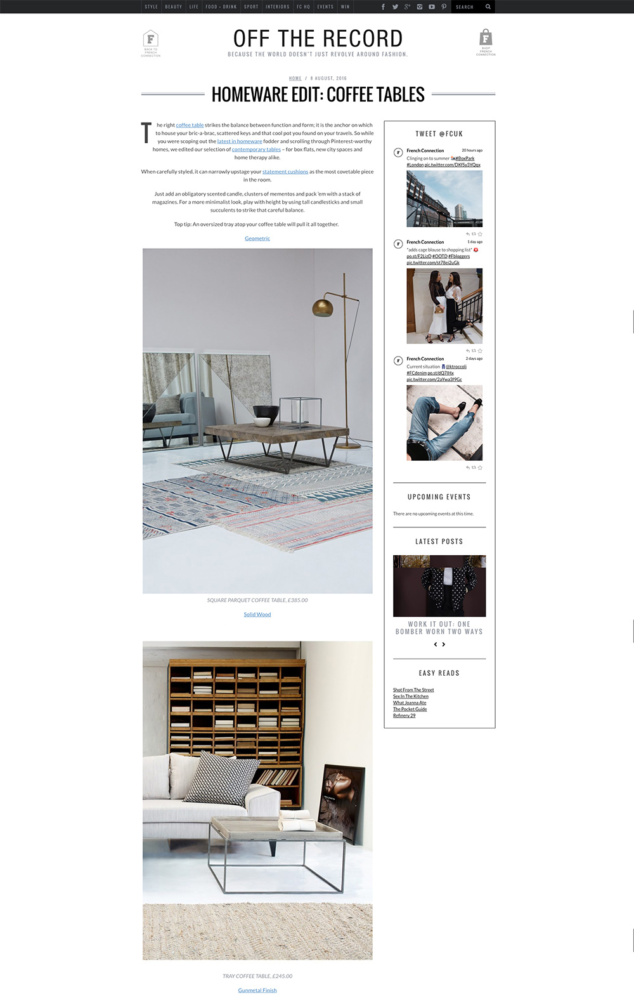
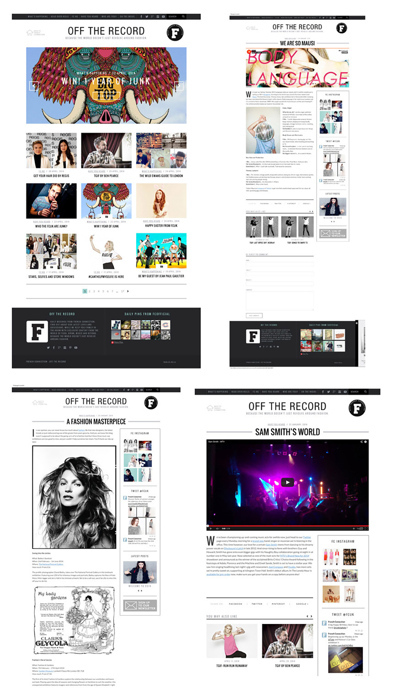

Daily musings from french connection uk. living to tell our tales and share a few of our favourite things. join us on our journey as we discover the many faces and expressions of a more stylish and creative lifestyle.
A stand alone blog for French Connection

- 
- 